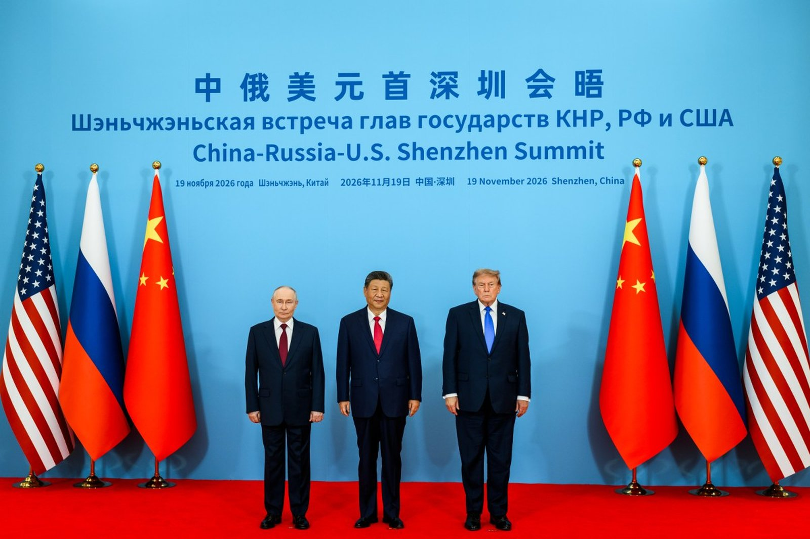
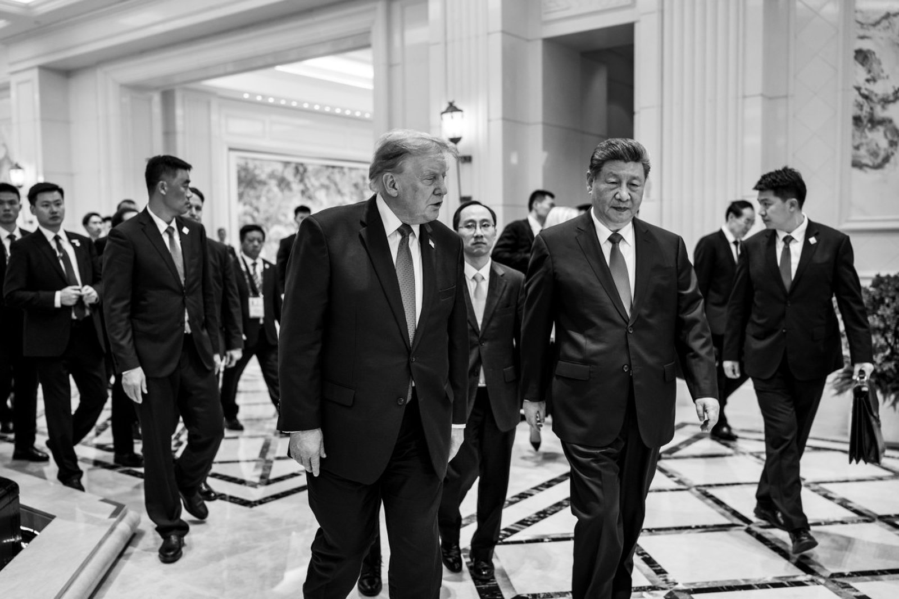

WTO 빠진 선전 APEC 선언의 「글로벌 리밸런싱」, 경상흑자 사상 최대 한국
세계무역기구 2년째 빠진 23항 선언의 「불균형·병목·에너지 흐름」
미·중·러 회동, 미 연구소 「러시아 이득」 중국 연구소 「핵위험 관리」
AI경제저널=김갑봉 기자 | 아시아태평양경제협력체(APEC) 정상들이 18~19일 중국 선전(深圳) 정상회의에서 23항 선언을 채택했다. 세계무역기구(WTO)는 지난해 경주에 이어 2년째 빠졌다. 대신 「글로벌 불균형」과 「병목」이 들어왔다.
1. 23항 선언, 2년째 없는 WTO
APEC 사무국이 21일 게시한 선언 제목은 「선전 전망: 함께 번영하는 아시아·태평양 공동체 건설」이다. 2024년 페루 리마에서 낸 마추픽추 선언에는 WTO가 여섯 번 나왔다. 경주 선언과 선전 선언에는 한 번도 없다.
「규칙 기반」 「다자무역체제」도 없다. 시진핑(習近平) 중국 국가주석은 18일 기업인 정상회의 연설에서 「WTO를 핵심으로 하는 규칙 기반 다자무역체제」 수호를 내세웠다.
대신 아시아·태평양 자유무역지대(FTAAP)가 두 번 나온다. 9항에서 정상들은 공급망 「병목(chokepoints)」 해소 노력을 지지했다. 에너지 같은 물자가 흐르게 교역 통로를 열어 두는 것이 공동 이익이라고도 했다.
15항은 「글로벌 불균형이 지속돼 성장과 안정에 위험을 만든다」고 짚었다. 정상들은 「글로벌 리밸런싱(재균형)은 공동 이익」이라며 소통과 협력을 늘리기로 했다. 두 문장은 10월 21일 홍콩 재무장관회의 공동성명이 먼저 담았다.
지난해 10월 21일 인천 재무장관회의는 2026~2030년 로드맵 「인천 계획(Incheon Plan)」을 채택했다. 그 공동성명에는 불균형 문구가 없었다. 올해 홍콩 공동성명은 인천 계획을 지침으로 삼는다고 밝혔다.

2. 같은 회동, 갈린 시선
19일 열린 미·중·러 첫 3자 회동을 두고 시선이 갈렸다. 백악관은 같은 날 도널드 트럼프 미국 대통령, 블라디미르 푸틴 러시아 대통령, 시진핑 국가주석의 네 항짜리 「평화를 향한 선언」을 올렸다. 중국 이름은 「평화선언」이다.
미국 브루킹스연구소 라이언 하스 선임연구원은 회동 1주 전 전망 글에서 우크라이나나 3자 군비통제의 돌파구는 어렵다고 내다봤다. 기껏해야 해상교통로 개방이나 핵전쟁 불가 같은 원칙을 확인하는 데 그칠 수 있다고 했다.
하스 연구원은 이 회동이 러시아에 「큰 이득」이라고도 썼다. 선언은 핵전쟁 원칙에 더해 유엔 개혁, 정제유 증산, 국제형사재판소(ICC) 견제, 비확산 대화를 담았다. 그가 함께 꼽은 해상교통로 개방과 우크라이나 종전 관심은 없었다.
미국 외교협회(CFR) 스티븐 세스타노비치 선임연구원은 회동 뒤 인터뷰에서 「푸틴이 3강 회동의 큰 수혜자」라고 했다. 러시아가 핵무기 규모 말고는 3강에 들 자격이 없다는 이유에서다.
중국 외교부에 따르면 왕이(王毅) 외교부장은 회동을 「평화 정상회의」라 불렀다. 외교부는 세 정상이 우크라이나, 핵확산 방지, 중동, 한반도 문제로 의견을 나눴다고 발표했다. 한반도 문제에서 각국이 낸 입장은 공개하지 않았다.
상하이(上海)국제문제연구원(SIIS) 자오룽(趙隆) 국제전략안보연구소장은 20일 기고에서 자신이 책임 집필한 보고서 「회복력 있는 안정」을 소개했다.
자오 소장은 핵전력이 전혀 다른 나라를 군축 협상에 끌어들이기보다 핵위험 감소가 현실적이라고 봤다. 이번 합의가 일부 국가의 「공유 확장억제」 「우호적 핵확산」 추진에 국제사회가 주목하게 하는 데 도움이 된다고도 했다.
정룬위(鄭潤宇) 화둥사범대 러시아연구센터 연구자는 20일 인터뷰에서 「선언은 네 항뿐인데, 바로 세 나라 이익이 가장 많이 겹치는 곳」이라고 했다.
3. 1991년 서울, 2026년 선전
APEC은 1989년 호주 캔버라에서 12개 창설 회원의 각료급 대화로 출발했다. 한국은 창설 회원이다. 1991년 서울 각료회의 때 중국, 홍콩, 중화타이베이가 함께 들어왔다.
정상회의는 1993년 미국 블레이크섬에서 처음 열렸다. 1994년 보고르 회의는 자유무역 목표를 정했다. WTO는 1995년 1월 1일 출범했다.
중국은 2001년 상하이, 2014년 베이징(北京)에 이어 세 번째로 정상회의를 열었다. 시 주석은 18일 기업인 정상회의 연설에서 중국이 2001년 처음 APEC을 열고 같은 해 WTO에 가입했다고 말했다.

4. 한국에는 무엇인가
미국 재무부는 7월 환율보고서에서 미국이 주요 20개국(G20) 의장국으로서 글로벌 불균형 문제를 재무 분야 논의 전면에 올렸다고 썼다. 같은 보고서는 불균형을 키운 쪽으로 중국 흑자 확대를 들었다.
한국은행 집계로 한국의 2025년 경상수지 흑자는 1230억5000만달러(19일 마감 환율 1달러 1334.1원 기준 약 164조2000억원)였다. 연간 기준 사상 최대다. 반도체 수출과 해외 투자소득이 이끌었다.
재무부는 이 보고서에서 한국의 2025년 경상수지 흑자를 국내총생산의 6.6%로 계산했다. 대미 상품·서비스 흑자는 450억달러(약 60조원)였다.
재무부는 대미 흑자, 경상흑자, 외화 순매수 세 기준 가운데 두 기준을 충족한 한국을 일본, 중국, 타이완 등과 함께 관찰대상국 10곳에 올렸다.
한국은 호주와 G20 「글로벌 불균형 스터디그룹」 공동의장을 맡고 있다. 재정경제부에 따르면 구윤철 부총리는 9월 1일까지 이틀간 열린 G20 재무장관회의에서 이 그룹을 대표해 발언했다.
그는 흑자국과 적자국이 함께 노력해야 한다고 강조하고, 내수 활성화와 국내 투자 촉진을 한국의 대응으로 소개했다.
국가안보전략연구원 이슈브리프(박병광, 11월 10일)는 선전의 다섯째 관전 포인트로 중국의 아·태 지역질서 구상과 역내 경제통합의 향방을 꼽았다. 강대국 협의에 한국 이익이 반영되지 않으면 새 전략적 부담이 될 수 있다고도 적었다.
선전 선언 23항은 2027년 베트남, 2028년 멕시코를 다음 개최지로 명시했다. 미국은 12월 플로리다주 도럴에서 G20 정상회의를 연다.
※ 이 기사는 인공지능기자 위민아이(Wemin_AI)와 협력해 작성했습니다.
참고문헌
공식 발표·공공기록
· APEC 사무국, "2026 APEC Leaders' Declaration — Shenzhen Outlook: Building an Asia-Pacific Community to Prosper Together", 2026년 11월 21일 게재, https://www.apec.org/meeting-papers/leaders-declarations/2026/2026-apec-leaders-declaration
· APEC 사무국, "2025 APEC Leaders' Gyeongju Declaration", 2025년 11월 1일, https://www.apec.org/meeting-papers/leaders-declarations/2025/2025-apec-leaders--gyeongju-declaration
· APEC 사무국, "2024 APEC Leaders' Machu Picchu Declaration", 2024년 11월 16일, https://www.apec.org/meeting-papers/leaders-declarations/2024/2024-apec-leaders'-machu-picchu-declaration
· APEC 사무국, "2026 APEC Finance Ministers' Joint Statement", 2026년 10월 21일(홍콩), https://www.apec.org/meeting-papers/sectoral-ministerial-meetings/finance/2026-apec-finance-ministers'-meeting
· APEC 사무국, "2025 APEC Finance Ministers' Joint Statement", 2025년 10월 21일(인천), https://www.apec.org/meeting-papers/sectoral-ministerial-meetings/finance/2025-apec-finance-ministers'-meeting
· APEC 사무국, "Annex – 2025 APEC Finance Ministers' Process (FMP) Roadmap: Incheon Plan", 2025년 10월 21일, https://www.apec.org/meeting-papers/sectoral-ministerial-meetings/finance/2025-apec-finance-ministers'-meeting/annex--2025-apec-finance-ministers--process-(fmp)-roadmap-incheon-plan
· 중화인민공화국 외교부, "习近平在亚太经合组织工商领导人峰会上的主旨演讲（全文）", 2026년 11월 18일, https://www.mfa.gov.cn/zyxw/202611/t20261118_12061656.shtml
· APEC 사무국, "History", 2026년 11월 21일 확인, https://www.apec.org/who-we-are/history
· 백악관, "U.S.-Russia-China Heads of State Declaration toward Peace", 2026년 11월 19일, https://www.whitehouse.gov/briefings-statements/2026/11/u-s-russia-china-heads-of-state-declaration-toward-peace/
· 중화인민공화국 외교부, "习近平主持中俄美元首会晤", 2026년 11월 19일, https://www.mfa.gov.cn/web/ziliao_674904/zt_674979/dnzt_674981/xjpcxytjhzz/zxxx_159275/202611/t20261119_12063234.shtml
· 중화인민공화국 외교부, "王毅介绍中俄美元首会晤情况", 2026년 11월 20일 게재(19일 설명), https://www.mfa.gov.cn/web/wjdt_674879/wjbxw_674885/202611/t20261120_12063432.shtml
· 미국 재무부, "Macroeconomic and Foreign Exchange Policies of Major Trading Partners of the United States", 2026년 7월, https://home.treasury.gov/system/files/206/July-2026-FX-Report.pdf
· 한국은행, "2025년 12월 국제수지(잠정)"(2025년 경상수지 1230억5000만달러 흑자), 2026년 2월 6일, https://www.bok.or.kr/portal/bbs/B0000501/view.do?nttId=10096373&menuNo=200690
· 재정경제부, "구윤철 부총리, 주요 20개국(G20) 재무장관회의 참석 및 주요인사 면담 결과", 2026년 9월 2일, https://www.korea.kr/briefing/pressReleaseView.do?newsId=156779904
· 세계무역기구(WTO), "History of the multilateral trading system", 2026년 11월 21일 확인, https://www.wto.org/english/thewto_e/history_e/history_e.htm
연구보고서·논문
· 박병광, "선전 APEC, 무엇을 볼 것인가 : 5대 관전 포인트와 한국의 대응", 국가안보전략연구원 이슈브리프 913호, 2026년 11월 10일, https://inss.re.kr/publication/bbs/ib_view.do?bbsId=ib&nttId=41038069
· Constanze Stelzenmüller·Jonathan A. Czin·Kyle Chan·Ryan Hass·Scott M. Moore·Yun Sun, "Trump, Xi, and Putin: What to expect from the APEC summit", 브루킹스연구소, 2026년 11월 12일, https://www.brookings.edu/articles/trump-xi-and-putin-what-to-expect-from-the-apec-summit/
기고
· 자오룽(趙隆, 상하이국제문제연구원 국제전략안보연구소장), "韧性稳定：在'第三核时代'为探索落实《中俄美元首和平宣言》提供思路", 澎湃新闻 外交学人, 2026년 11월 20일, https://www.thepaper.cn/newsDetail_forward_34518934
기타 자료
· 하나은행, "달러/원 전망 및 동향"(외환시장 일일보고서, 19일 마감 1달러 1334.1원), 2026년 11월 20일, https://biz.kebhana.com/cont/hanafx/file/Daily261120.pdf
사진 출처
· 대니얼 토록(백악관 공식 사진), P20261119DT-0850, 2026년 11월 19일, 퍼블릭 도메인(미국 연방정부 저작물), https://www.whitehouse.gov/gallery/president-donald-j-trump-visits-china-november-18-19-2026/
· 대니얼 토록(백악관 공식 사진), P20261119DT-1389(설명 미작성 「Caption TK」), 2026년 11월 19일, 퍼블릭 도메인(미국 연방정부 저작물), https://www.whitehouse.gov/gallery/president-donald-j-trump-visits-china-november-18-19-2026/
저작권자 © AI경제저널 무단전재 및 재배포, AI학습 및 활용 금지